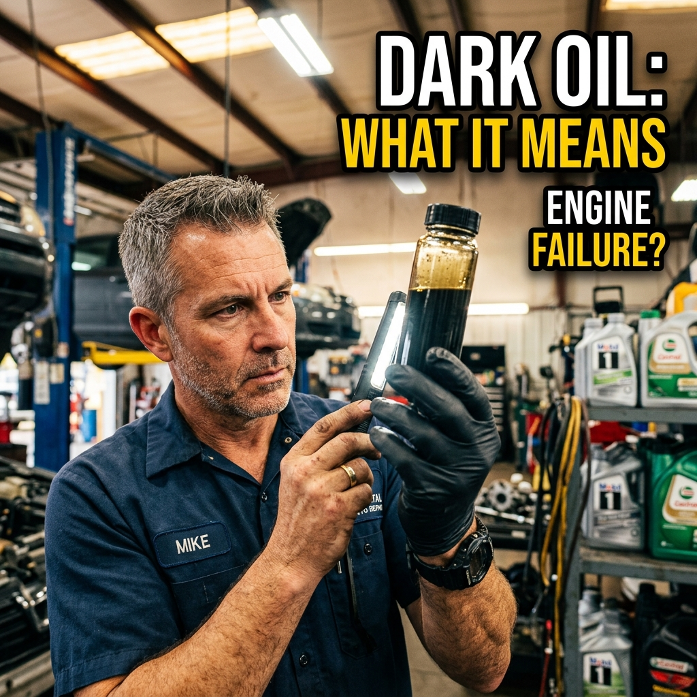
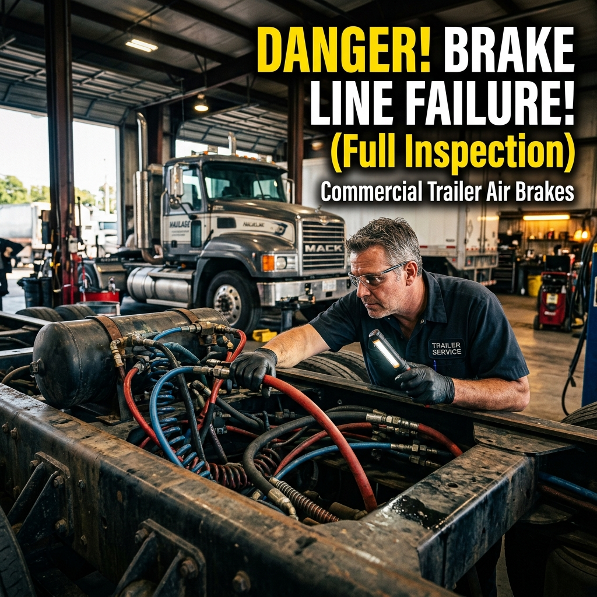
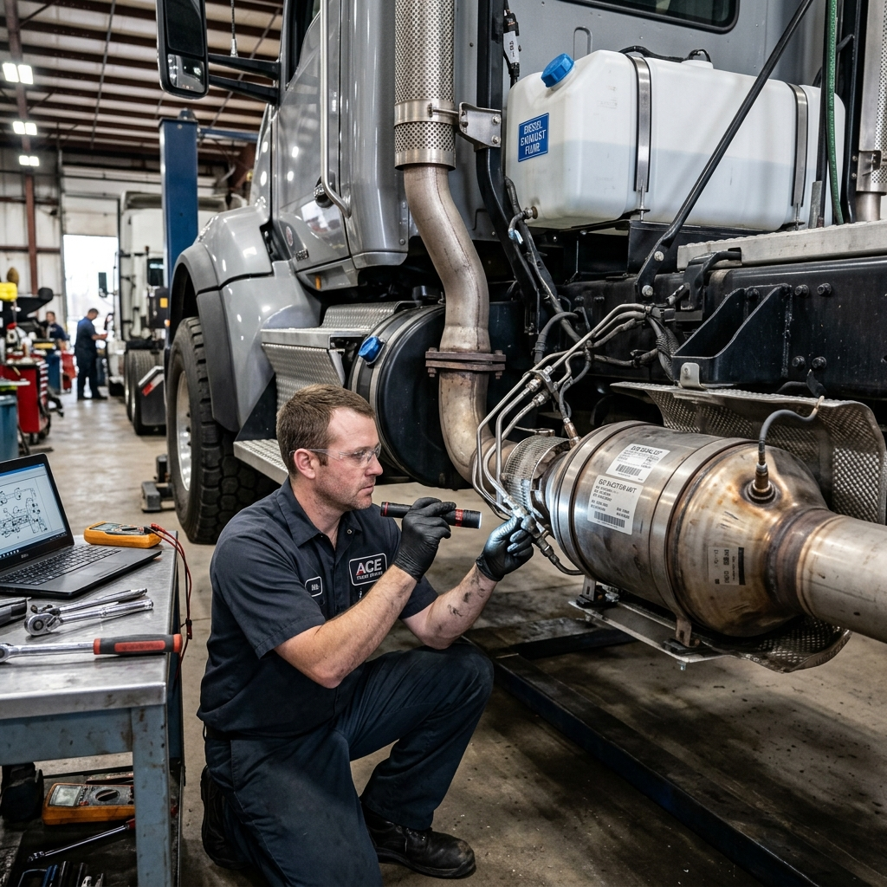
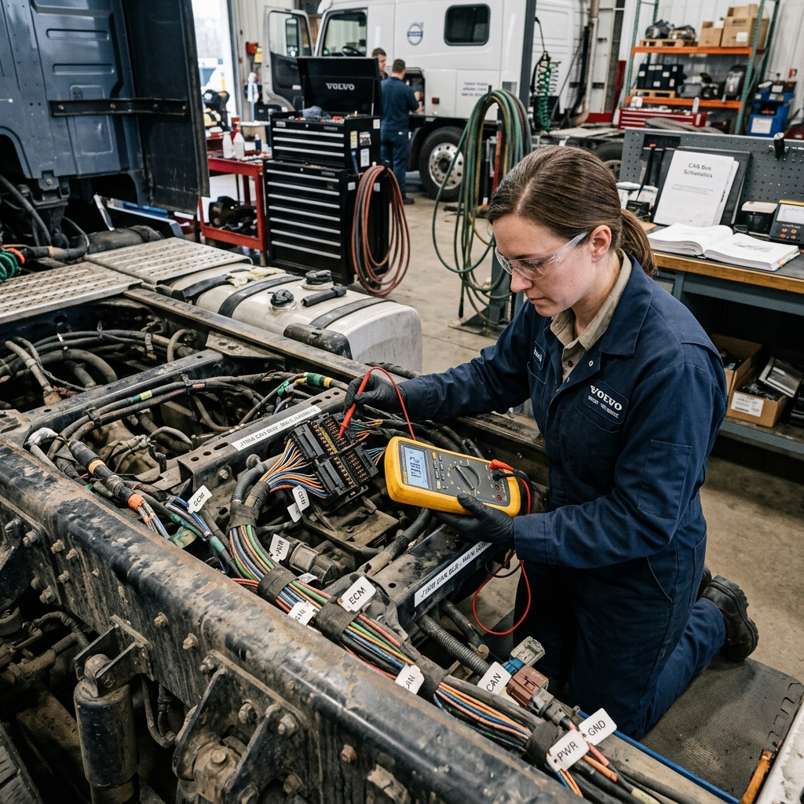
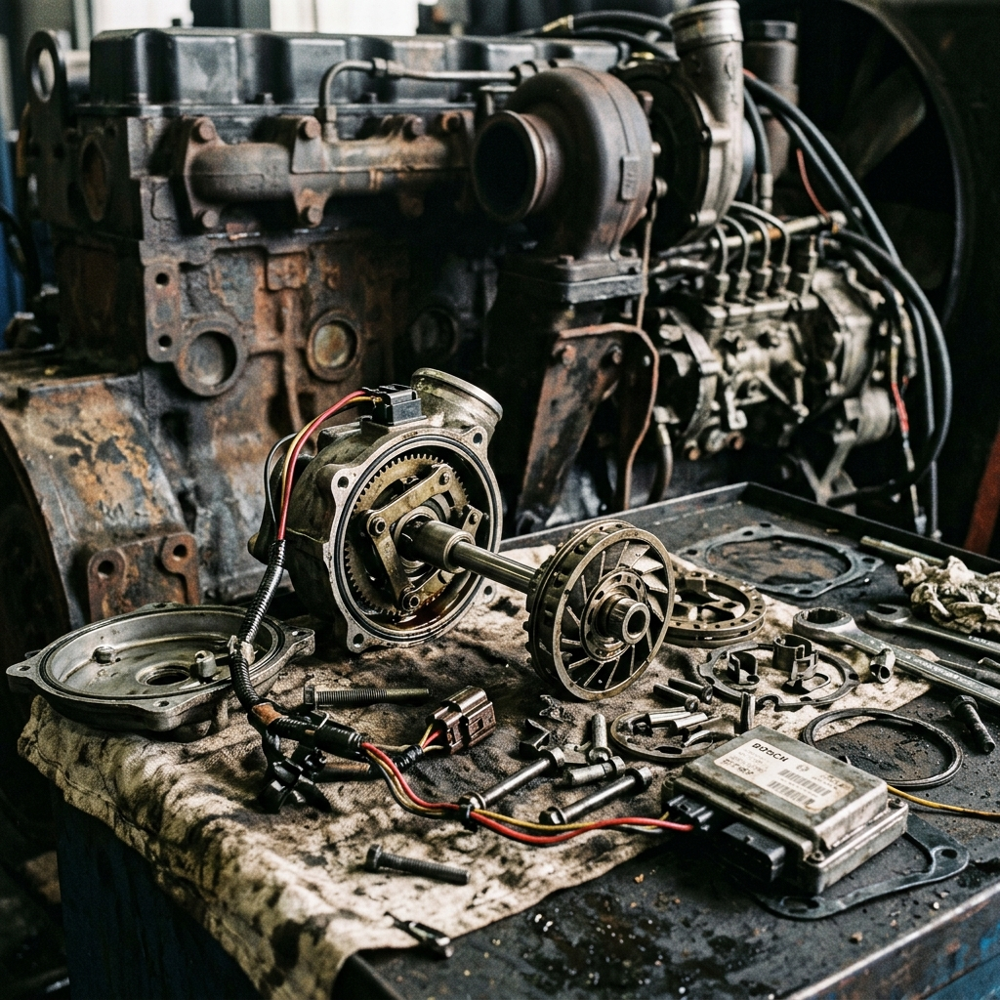
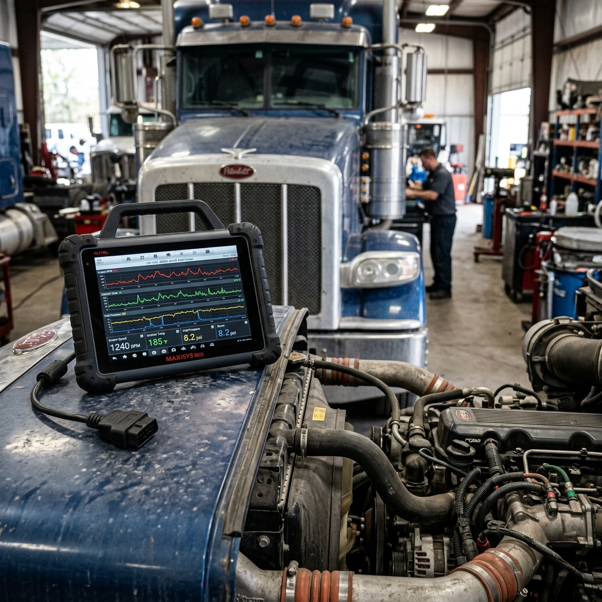

Fleet Maintenance Insights.
Expert tips, diesel repair guides, and the latest trends in commercial vehicle maintenance to keep your fleet running flawlessly year-round.
The 100k Mile
Preventative Checklist
Never miss a critical service milestone. Follow this standardized commercial fleet preventative maintenance schedule to ensure maximum uptime.
Every 10,000 Miles
Standard lube, oil, and filter (LOF). Comprehensive visual inspection of hoses, belts, and undercarriage.
- Oil & Filter Change
- Grease Chassis
- Tire Pressure & Tread
- Fuel Filter Replacement
- Air Filter Inspect/Replace
- Brake Adjustment
Every 30,000 Miles
Brake stroke measurement and adjustment. Fuel system filter swap to prevent injector fouling.
Every 50,000 Miles
Complete drivetrain fluid swap, including transmission and differential. DPF health check and forced regen if necessary.
- Transmission Fluid
- Differential Fluid
- DPF Inspection
- Coolant Flush
- Valve Lash Adjustment
- DPF Cleaning/Bake
Every 100,000 Miles
Overhead valve adjustment, complete cooling system flush, and DPF removal for professional baking.
Diesel Tech Podcasts

Interview with a Master ASE Tech: The Future of EV Fleets
We sit down with a veteran diesel mechanic to discuss how electric trucks are changing the maintenance landscape.

Navigating DPF Regens on the Road
Quick tips on handling forced regens when you're 500 miles from the nearest terminal.

Fluid Analysis Deep Dive
How to read an oil sample report like a pro to prevent catastrophic engine failure.

Brake Air Systems Explained
Diagnosing hard-to-find air leaks in heavy-duty commercial trailers and tractors.
Technical Deep Dives
In-depth articles tackling the most complex engine fault codes, emissions systems, and electronic diagnostics.

The Truth About SCR Systems and DEF Quality
Poor quality Diesel Exhaust Fluid can crystallize and destroy an entire SCR catalyst. Learn how to test DEF concentration before it ruins your exhaust system.
Read Full Guide
Chasing Parasitic Draws on Commercial Vehicles
Dead batteries every morning? We walk you through step-by-step multimeter testing to isolate phantom electrical drains across multiplexed wiring harnesses.
Read Full Guide
Variable Geometry Turbo (VGT) Actuator Failures
A stuck VGT actuator can simulate major engine issues. Learn how to clean and test the VGT linkage before spending thousands on a completely new turbocharger.
Read Full Guide
Next-Gen OEM Diagnostic Scanners
We review the top rugged diagnostic tablets used by mobile diesel mechanics. From bi-directional controls to live data graphing, find out which scanner provides the best ROI for independent service providers.
-
Wireless VCI Connectivity
Test components while walking around the rig.
-
Topology Mapping
Instantly see the health of the entire CAN bus network.
Fast Fix Tech Tips
Quick, actionable advice from our mobile service trucks straight to your inbox. No fluff, just wrench-turning reality.
Air Dryer Purge
If your air dryer is purging every 30 seconds, don't just replace the cartridge. Check the unloader valve on the compressor first.
Battery Banks
Always replace all 4 batteries at once. One weak battery will drag down the new ones within a matter of weeks.
EGR Coolers
Unexplained coolant loss without visible leaks? Pull the EGR crossover tube and check for white buildup.
Wheel Seals
A leaking wheel seal isn't always the seal's fault. Check the axle vent tube; if it's clogged, pressure blows the seal.